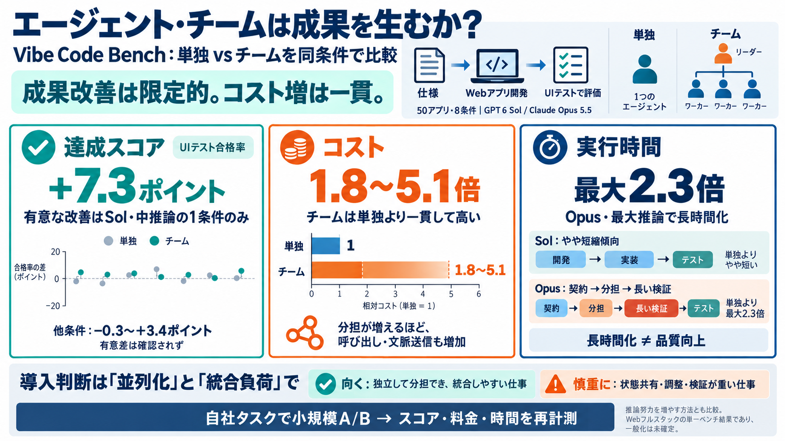

Do Agent Teams Pay Off? A Case Study on Vibe Code Bench | Vals AI
Katrina Drozdov • 10/09/2026 Do Agent Teams Pay Off? A Case Study on Vibe Code Bench Both OpenAI and Anthropic now shi…

単独エージェント（single agent）と、分担するチーム方式（agent teams）を、同条件のベンチマークで比較したケーススタディ。
評価は「達成スコア（テスト合格率）／コスト（料金）／実行時間」を同時に測定（vibe code bench）。
「チームの方が良さそう」は、コスト増や時間増を無視しがちです。
本研究は、成果（スコア）と、代償（料金・実行時間）を同じ土俵で比較します。
DB・API・UI・デプロイを含む一連の実装を、仕様から完成させます。
部品のつなぎ目（例：APIとUIの整合）が壊れると、テスト合格率（スコア）に直結します。
GPT 6 Sol と Claude Opus 5.5 を使い、single / team と推論努力（中推論/最大推論）などで複数条件を実行。
チーム方式のコストは、単独より一貫して高く 1.8〜5.1倍 になりました。
統計的に有意だったのは、Solの「中推論」でチームが約7.3ポイント上振れした1ケースのみ。
チームが常に短縮するとは限り、モデルごとのプロセス差が大きく影響しました。
長時間化＝自動で品質向上、ではありません。
Opusでは「契約（CONTRACT.md）作成→波状分担→長い検証」が入り、最大推論ほど時間が膨らみやすい構図。
チームの価値は“並列化できる性質”に依存し、推論努力（effort）を増やす代替策と比較して判断が必要です。
チームは成果を改善し得るが、常に上回るわけではなく、特にコスト増（1.8〜5.1倍）に対してスコア差が小さいことが多い。
このスライドは、提示された記事要約（Vibe Code Benchのケーススタディ：Do Agent Teams Pay Off?）と、その後のFAQ/意見・補足に基づいて再構成しています。
モデル：GPT 6 Sol / Claude Opus 5.5。比較：single agent vs agent teams。測定：達成スコア・コスト・実行時間。
Katrina Drozdov • 10/09/2026 Do Agent Teams Pay Off? A Case Study on Vibe Code Bench Both OpenAI and Anthropic now shi…
## Conclusion Agent Teams marks a significant step for Claude Code, moving from single-agent operation to genuine team …
There is no separate agent pricing. Every session consumes tokens from your existing plan at the same rate as interactiv…
Trend 1 — The SDLC changes dramatically. Cycle times collapse from weeks to hours as agent-driven implementation, automa…
· Jun 23, 2026 Press enter or click to view image in full size Portugal, on a weekend I should have been reviewing PR…